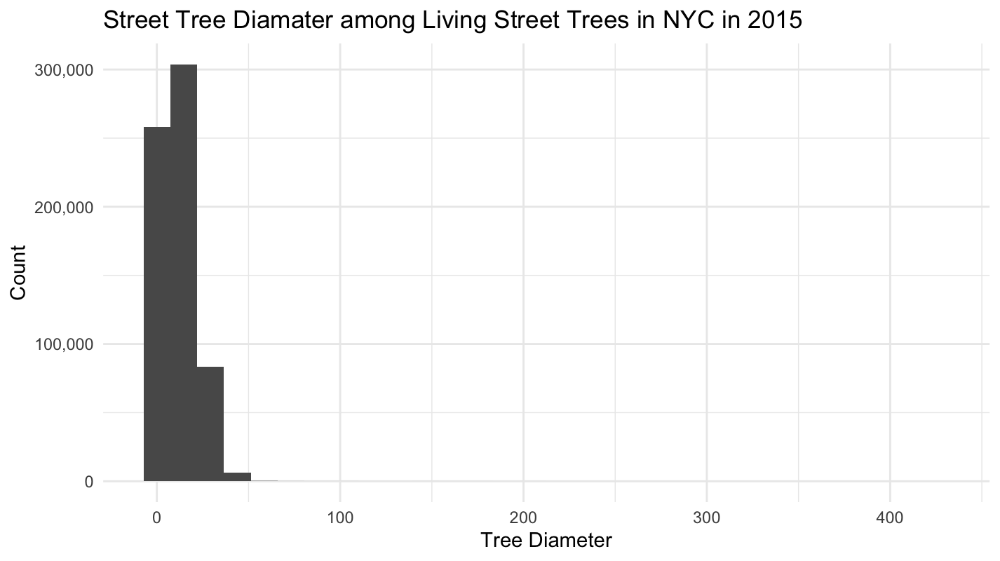
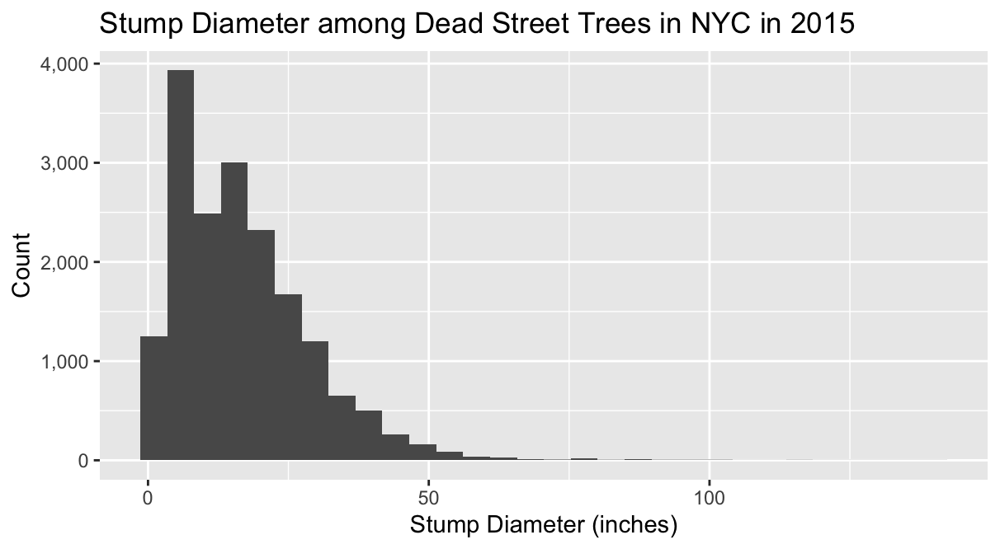
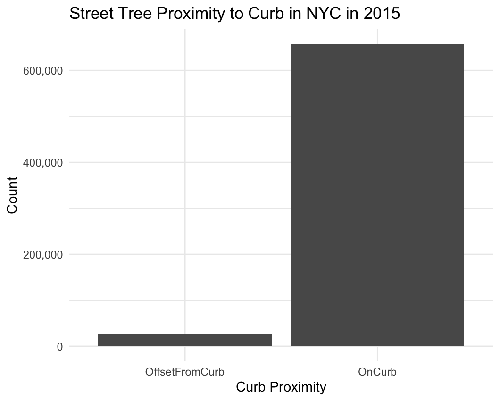
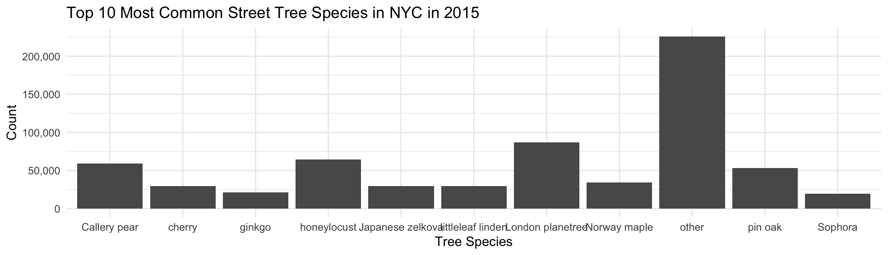
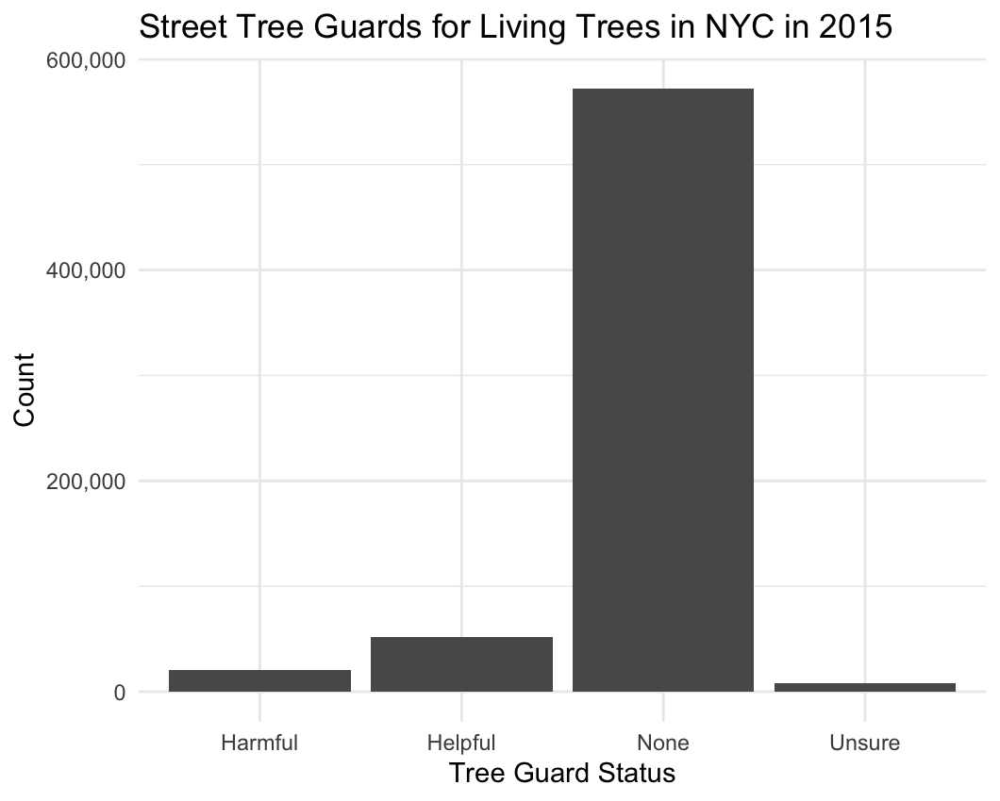
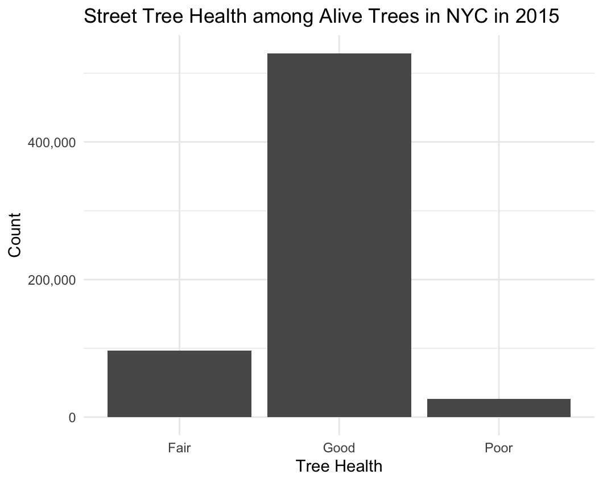
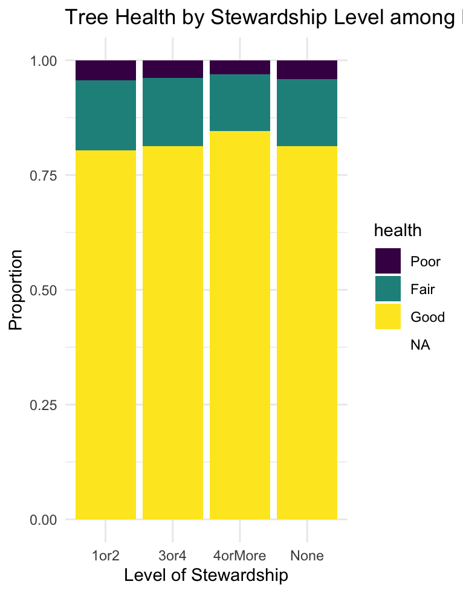
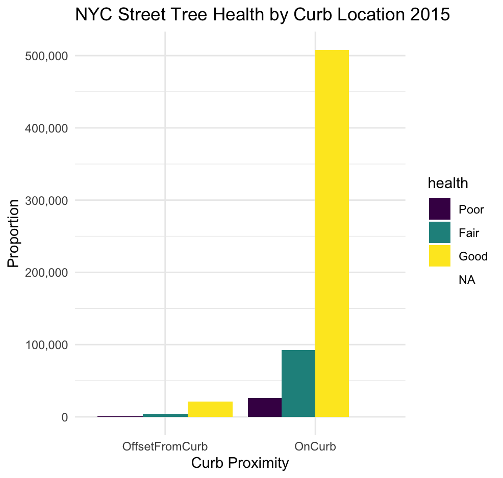
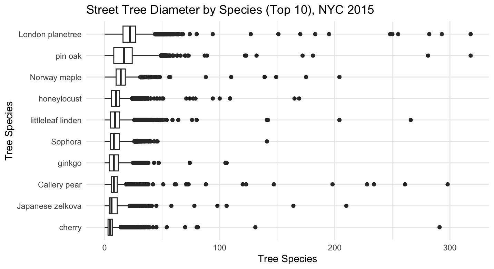

New York City's Street Tree Census of 2015
Data Source
The data for this project was sourced from NYC Open Data. It contains tree data from the 2015 Street Tree Census, which was a citizens science project in which volunteers collected various data points about each tree found on or near a New York City street.
Because this is a citizens science project, a lot of the data was collected by volunteers. Assuming these volunteers were not trained in tree identification, there may be inconsistencies or biases in the data.
Highlighted Variables
- tree_dbh
- stump_diam
- curb_loc
- spc_common
- guards
- health
- steward
This quantitative variable is the diameter of the tree at 54" above the ground (for living trees). It is measured in inches.
This quantitative variable measures the stump diameter for dead tree stumps in inches.
This categorical variable states if the tree was on the curb or offset from the curb.
This categorical variable stores the common name for the tree species.
This categorical variable states whether or not a guard is present for healthy trees and if it was useful or not useful.
This ordinal variable measures the perceived health of the tree on a scale from 'poor' to 'good'.
This ordinal variable indicates the number of unique signs of stewardship observed for this tree. The options are `None`, `1 or 2`, and `3 or 4`.
Exploratory Data Analysis
Tree Diameter
 There are 652,173 living trees in this data set. This makes up the majority of observations in the dataset.
The minimum tree diameter is 0 inches, and the maximum is 425 inches. The mean diameter is 11.17 inches.
Curb Location
Most trees in this data set are located on the curb.
Species
There are 132 different tree species in this data set. The graph above shows the distribution of the top 10 most common species including:
- London planetree
- Honeylocust
- Callery Pear
- Pin Oak
- Norway Maple
- Littleleaf Linden
- Cherry
- Japanese Zelkova
- Ginkgo
- Sophora
Guard Presence
Most trees in this data set do not have a guard present. Out of the trees that do have guards, there are more helpful guards present than unhelpful ones.
Health
Most trees in this data set are in good health. There are few trees in "fair" health, and even fewer in poor health.
Tree Stewardship

Most trees in this data set have no signs of stewardship. If they do, then they are more likely to have 1 or 2 signs of stewardship.
Visualizations
Tree Stewardship and Tree Health
There does not seem to be a strong relationship between tree stewardship and tree health, although trees with 4+ signs of stewardship are slightly more likely to be in good health.
Curb Location and Tree Health
There does not seem to be a strong relationship between curb location and tree health.
Tree Diameter and Tree Species
There seems to be a weak relationship between tree diameter and tree species. While there is a lot of overlap in the diameter distribution for each species, some species such as the london planetree and the honeylocust have a higher median diameter than others.
Hypotheses
- Tree stewardship does not greatly affect perceived tree health.
- Curb location does not affect tree health.
- Tree diameter is affected by the tree's species.